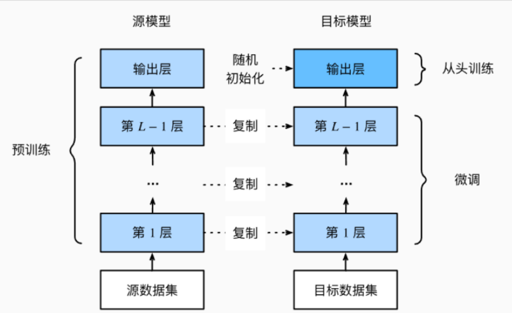

什么是微调
在当今自然语言处理领域，预训练语言模型如GPT、BERT等凭借强大的通用能力，已经成为推动技术 进步的重要引擎。然而，仅仅依赖这些通用模型，往往难以满足具体任务的特殊需求。为了让预训练 模型更精准地适配各种下游任务，“微调”这一技术应运而生。
1. 什么是微调？
在自然语言处理（NLP）和机器学习领域，微调（Fine-tuning）指的是在一个已经预训练好的模型基 础上，利用特定下游任务的数据进行进一步训练，从而让模型更好地适应具体任务的过程。 简单来说，微调就像是在一辆性能优越的汽车基础上，进行细节调校，使其更适合你自己的使用需 求，而不必从头打造一辆新车。
1.1 微调的重要性
随着大规模预训练模型（如BERT、GPT等）的出现，它们在海量数据上学习了丰富的语言知识。直接 训练一个从零开始的模型，不仅成本高昂，而且效果有限。微调通过利用预训练模型的知识，可以大 幅提升下游任务的表现。
这种方式具有以下优势：
-
节省时间和计算资源：避免了从头训练大模型的巨大成本。
-
提升模型性能：预训练模型已经学到了通用知识，微调可以快速适应特定任务。
-
• 适应多样化任务：同一预训练模型可以通过微调处理不同类型的任务，如文本分类、问答、命名实 体识别等。
1.2 微调的基本流程

微调通常包含以下几个步骤：
-
准备预训练模型：选择一个适合的预训练语言模型作为基础。
-
加载下游任务数据：获取带标签的任务数据，例如情感分类的标注文本。
-
• 调整模型结构（可选）：有时会在模型基础上添加任务相关层，比如分类头。
-
训练模型：使用下游任务数据继续训练，更新模型部分或全部参数。
-
评估和部署：在验证集上评估微调效果，调整超参数后应用于实际场景。
1.3 微调的主要方式
常见的微调方式包括：
-
全量微调（Full Fine-tuning） 更新模型所有参数，适合有充足计算资源的场景，能达到最佳性能，但成本高。
-
参数高效微调（Parameter-efficient Fine-tuning） 只微调模型中一小部分参数（如Adapter、LoRA、Prefix Tuning等），大幅降低训练成本和显存需 求，同时保证性能。
1.4 总结
总的来说，微调是连接预训练模型与实际应用的桥梁，它使得强大的通用模型能够快速且高效地适应 具体任务。随着模型规模的不断增长，研究者也在不断探索更高效的微调方法，以降低资源消耗并提 升使用便捷性。